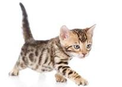

Um gatinho bebê malhado é uma verdadeira gracinha. Eles geralmente têm um pelo macio e fofo, com diferentes tonalidades de malhas que podem ser mescladas, listradas ou até mesmo em formato de manchas. Os olhinhos costumam ser grandes e brilhantes, transmitindo muita doçura. Gatinhos bebês malhados também são muito brincalhões e adoram receber carinho. Tenho certeza de que ele vai trazer muita alegria para sua casa!

voltar para principal